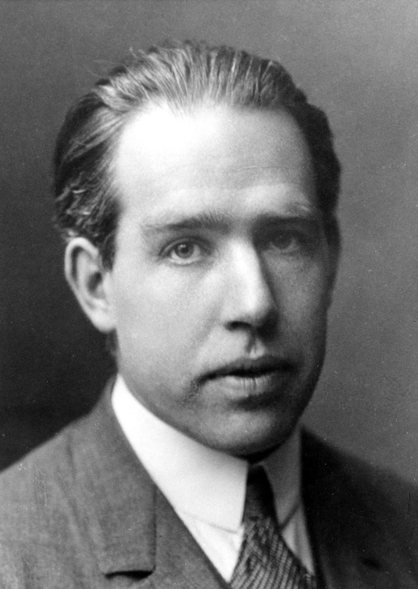
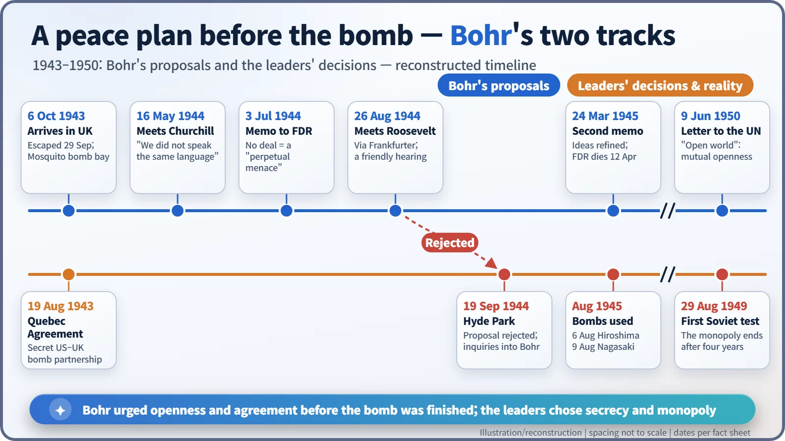
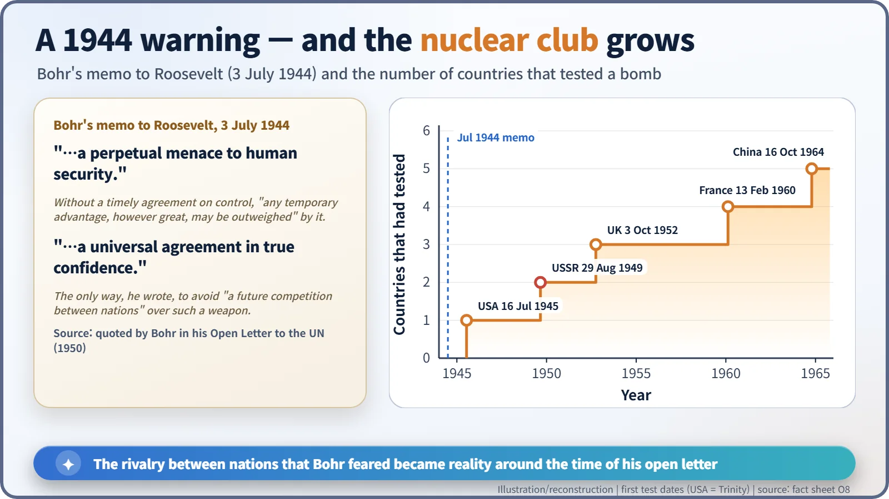

Nuclear History · 113
A Peace Plan Drawn Up Before the Bomb — Niels Bohr and the "Open World"
Months before the first test, a Danish physicist argued that only openness and agreement could prevent a nuclear arms race.
In 1944, before any atomic bomb existed, the Danish physicist Niels Bohr urged Churchill and Roosevelt to tell the world, including the Soviet Union, and to negotiate international control while there was still time. Both leaders turned him down. In 1950 he made his case public in an Open Letter to the United Nations, calling for an "open world".
A passenger in the bomb bay
On 6 October 1943 a single de Havilland Mosquito, flown by the British airline BOAC, left Sweden and headed out over the North Sea. It carried one passenger, lying on a mattress in the bomb bay: the Danish physicist Niels Bohr (1885–1962). According to a story often told, his flying helmet was too small for his famously large head, so he never heard the pilot's instruction over the intercom to switch on his oxygen. As the plane climbed over Norway he passed out, and he came round only when it dropped lower over the sea. The man who would think harder than almost anyone about the future of the atomic bomb very nearly did not arrive at all. [4]
A week earlier, on 29 September, Bohr had fled occupied Denmark by boat to Sweden with the help of the Danish resistance; his mother came from a Jewish family, and arrest was a real threat. In Britain he learned that work on an atomic bomb was far more advanced than he had imagined. On 8 December he reached Washington, travelling as "Nicholas Baker", and over the next two years he made long visits to Los Alamos, where he became a father figure to many of the younger scientists. [4]

Why it had to be now
But the thing Bohr really worked on was not the bomb. It was the world that would come after it. His reasoning was simple and sharp. Once the principle was known, other countries would sooner or later build the weapon too. If the Americans and British kept it as a secret after it was finished, others would follow in suspicion and the race would never end. Better, then, to talk about control before the bomb existed, while no one had yet used it, and to include the Soviet Union.
He was not proposing to hand over blueprints. He wanted the Allies to disclose that such a weapon was coming and that they were willing to negotiate, so that trust had somewhere to start. [1]
There was even a hint that the door might be open. In April 1944, in London, Bohr received a letter from the Soviet physicist Pyotr Kapitsa, written while Bohr was still in Sweden, inviting him to Moscow. Bohr drafted a polite, non-committal reply, showed it to the British authorities and only then sent it. [4]
Knocking on two doors
On 16 May 1944 Bohr met Winston Churchill in London. It went badly. Churchill barely listened, and Bohr later said, "We did not speak the same language." That autumn, in a note to his adviser Lord Cherwell, Churchill reportedly wrote that Bohr "ought to be confined or at any rate made to see that he is very near the edge of mortal crimes." [4]
Bohr kept going. Through his friend Felix Frankfurter, a Justice of the US Supreme Court, he reached President Franklin D. Roosevelt and submitted a memorandum dated 3 July 1944. It warned: "Unless, indeed, some agreement about the control of the use of the new active materials can be obtained in due time, any temporary advantage, however great, may be outweighed by a perpetual menace to human security." The "terrifying prospect of a future competition between nations", he wrote, could "only be avoided through a universal agreement in true confidence." [1] [3]
On 26 August Roosevelt received him at the White House, listened sympathetically and suggested he seek British agreement. Less than a month later, on 19 September, Roosevelt and Churchill decided at Hyde Park that the proposal to inform the world as a step towards international control was "not accepted", and added that enquiries should be made into Bohr's own activities. [2] [4]

A late letter and an open world
Bohr refined his ideas on control in a second memorandum dated 24 March 1945, but Roosevelt died on 12 April. In August the bombs were used without any international agreement in place, and on 29 August 1949 the Soviet Union tested its first atomic bomb. The American monopoly had lasted four years. The competition Bohr feared had begun. [1]

Openness as the way out
On 9 June 1950 Bohr stopped keeping quiet. In an Open Letter to the United Nations he made his 1944 memoranda public for the first time and argued: "The very fact that knowledge is in itself the basis for civilization points directly to openness as the way to overcome the present crisis." Only "full mutual openness", he wrote, could "effectively promote confidence and guarantee common security." His goal was "an open world where each nation can assert itself solely by the extent to which it can contribute to the common culture and is able to help others with experience and resources." [1]
The timing was cruel. Barely two weeks later the Korean War broke out, and many historians judge that the letter was lost in the noise of the early Cold War. Yet the idea survived. On 24 October 1957 Bohr received the first Atoms for Peace Award, and today's arguments for inspection and transparency in nuclear arms control still echo his words. The University of Copenhagen even runs an "Open World" conference series in his name. He tried to design the peace before the bomb went off; the plan is still on the table. [4] [5]